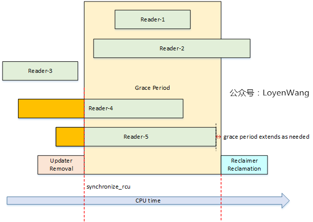
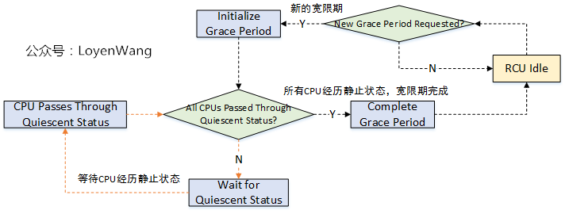
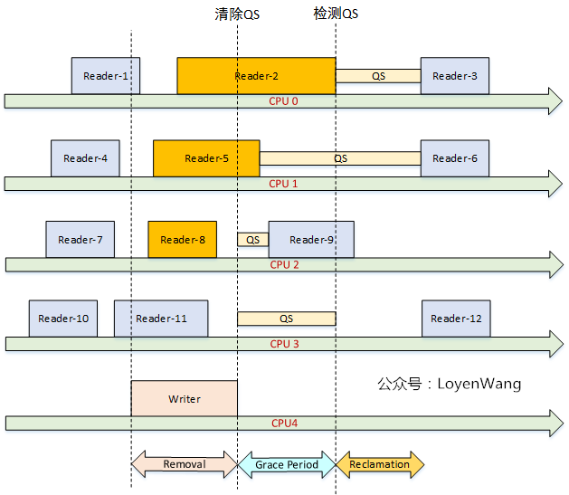

RCU锁（Read-Copy-Update）
1. 简介
内核锁机制：
- 读写锁：适合读多写少的场景；
- 自旋锁：获得锁的CPU将会阻塞其他CPU的访问；
- 信号量：适用于进程长时间占用锁，并且允许上下文切换；
RCU锁 思想：如果能够保证 使用某个公共数据 的线程不再使用它，那么就可以安全删除此公共数据。
所以，具体操作就是：先把旧的临界资源移除（修改指针），然后等待所有人都不使用它，再把旧的资源进行回收。
【原理】：
- （Reader）多个读可以并发访问临界资源，使用
rcu_read_lock和rcu_read_unlock标定临界区； - （Updater）写的时候，先Copy一份副本作为基础进行修改，当所有读者离开临界区后，更新指针为新的副本，并对旧资源进行回收处理。
- （Reclaimer）等待所有读者退出临界区，这个等待时间叫做宽限期（Grace period）。
【RCU保护的临界资源】通常为：
- 指针
- 链表
- hash链表
内核提供了【三种RCU】：
- 不可抢占RCU：临界区内不可被抢占，
rcu_read_lock/rcu_read_unlock，rcu_read_lock_sched/rcu_read_unlock_sched； - 下半部RCU：临界区内禁止软中断，
rcu_read_lock_bh/rcu_read_unlock_bh； - 可抢占的RCU：临界区内可以睡眠，可以被抢占，Sleepable Read-copy update (SRCU)。
srcu_read_lock/srcu_read_unlock；
【使用注意事项】：
- 通常需要禁止内核抢占。这也是
rcu_read_lock的功能。 - 比如
rcu_read_lock，临界区内不能使用可睡眠的代码，比如alloc_pages。 - 写者更新临界资源（比如指针）时，使用
rcu_assign_pointer来更新； - 对旧资源进行回收前需要等待宽限期结束。比如
synchronize_rcu（同步等待）；call_rcu（异步等待）
为什么临界区内不能睡眠？不让被抢占？
睡眠意味着上下文切换，进程CPU被抢占，上下文切换在RCU宽限期检查中被认为是静止状态（QS）的标志，是不允许出现在处于临界区的读者身上的。这个会影响宽限期的检查。
【优点】：
- 读开销很少，不需要获取任何锁，不需要执行原子指令或内存屏障
- 没有死锁问题；
- 没有优先级反转问题；
【缺点】：
- 写同步开销很大，写之间需要互斥；
- 使用上比其他同步机制复杂；

2. 宽限期（Grace period）

3. 如何确定宽限期？
宽限期的结束代表着Reader都已经退出了临界区，这时才能安全的进行回收工作。
判断宽限期的结束，与CPU检测静止状态（Quiescent Status）有关，这也影响着RCU的性能。
Quiescent Status：用于描述CPU的执行状态。当CPU正在访问受RCU保护的临界资源时，认为是活动状态；当它离开临界区后，则认为它是静止状态。
当所有的CPU都至少经历过一次 QS 后，则认为宽限期结束。


4. rcu_assign_pointer 做了什么？
#define rcu_assign_pointer(p, v) \
do { \
uintptr_t _r_a_p__v = (uintptr_t)(v); \
rcu_check_sparse(p, __rcu); \
\
if (__builtin_constant_p(v) && (_r_a_p__v) == (uintptr_t)NULL) \
WRITE_ONCE((p), (typeof(p))(_r_a_p__v)); \
else \
smp_store_release(&p, RCU_INITIALIZER((typeof(p))_r_a_p__v)); \
} while (0)
- 大多数情况下，插入内存屏障；
- 关闭编译器在赋值时的非顺序编译优化，保证赋值时已经被初始化了。
p->a = 1;
p->b = 2;
p->c = 3;
rcu_assign_pointer(gp, p);
// 某些平台的编译器优化可能会重排指令，导致 p 还没被初始化，就被赋值给了 gp 。
5. call_rcu注册的回调函数在哪里调用？
RCU_SOFTIRQ 软中断
6. 宽限期的处理工作在哪里？
rcu_gp_kthread 内核线程
7. SRCU（Sleepable Read-Copy-Update）
8. Tree RCU
参考
https://www.cnblogs.com/LoyenWang/p/12681494.html
https://www.cnblogs.com/LoyenWang/p/12770878.html
https://blog.csdn.net/huang987246510/article/details/102762067